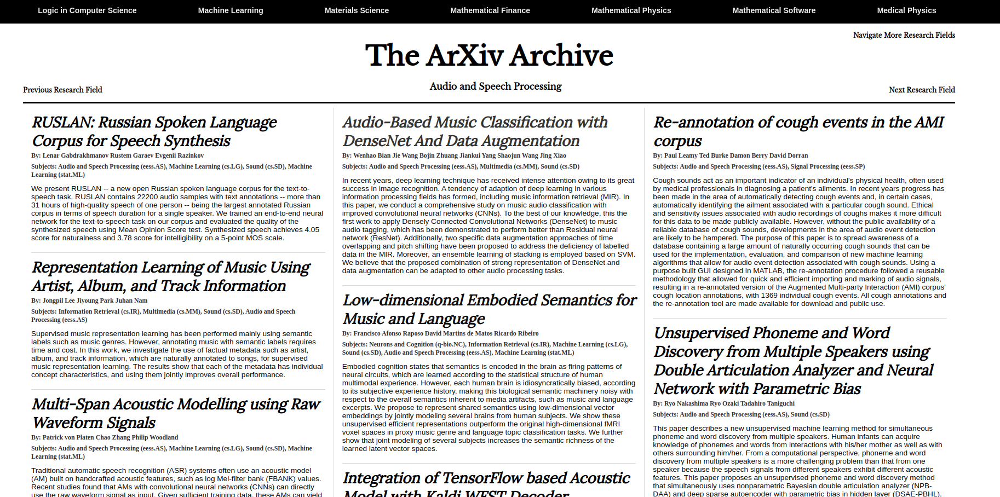

<div class="row">
  <div class="portfolio-item">
    <h3><a href="https://paul-tqh-nguyen.github.io/arxiv_as_a_newspaper/">Reskin</a> of <a href="https://arxiv.org/">arxiv.org</a></h3>
    <h4>A Modern Aesthetic Applied to <a href="https://arxiv.org/">arxiv.org</a></h4>
    <br>
    <table style="width:100%;">
      <tr>
        <th>
	  <center>
	    
	    <br>
	    <div style="padding-top: 5px">A ReactJS Application backed by <a href="https://www.mongodb.com/cloud/atlas">MongoDB Atlas</a> and <a href="https://medium.com/@nparsons08/mongodb-stitch-your-application-backend-delivered-as-a-service-7cf21d979ed">MongoDB Stitch</a>.</div>
	  </center>
	</th>
      </tr>
    </table>
    <br>
    <p>This is a reskin of <a href="https://arxiv.org/">arxiv.org</a> that resembles the aesthetics of a newpaper's website aimed at giving it a more modern appearance.</p>
    <p>Source code: <a href="https://github.com/paul-tqh-nguyen/arxiv_as_a_newspaper">Github</a></p>
    <p>Live Demo: <a href="https://paul-tqh-nguyen.github.io/arxiv_as_a_newspaper/">Demo</a>
  </div>
</div>
